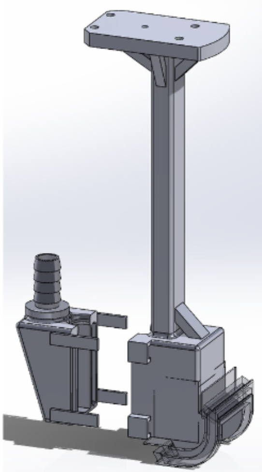

Boeing Advanced Research Center (BARC)
Research Assistant

Overview
Research at BARC included mechanical design of a curved probe end-effector for complex composite scans and algorithm development for robot path planning (Boustrophedon decomposition). FFT-based noise reduction for signal processing.
Curved probe design
- Idea inspiration from current design; improved for laser line scanner, water column, and robot path planning
- Compared with previous concepts (e.g. flat end effector) and iterated to final curved design
Path planning — Boustrophedon decomposition
- Identify obstacle coordinates to avoid
- Use IN and OUT events (identified via ceiling and floor pointers), dividing the workspace into cells
- Depth-first search to navigate through cells in a counterclockwise manner
How
- Identified two root causes of scan artifacts in Boeing composite inspection workflows using FFT-based signal analysis.
- Designed a novel two-curve probe geometry that eliminated geometric artifacts; redesigned the fixture to increase water retention by 40%—improving defect detection reliability and SNR.
- Curved probe designed for laser line scanner, water column, and robot path planning; compared with prior concepts (e.g. flat end effector) and iterated to final design. Path planning via Boustrophedon decomposition (IN/OUT events, DFS).